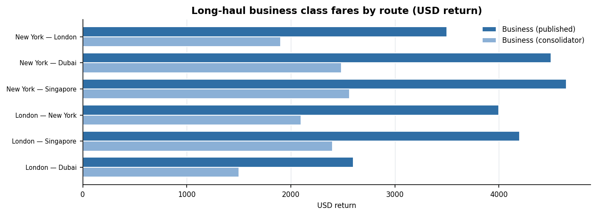
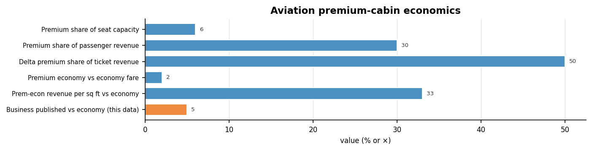
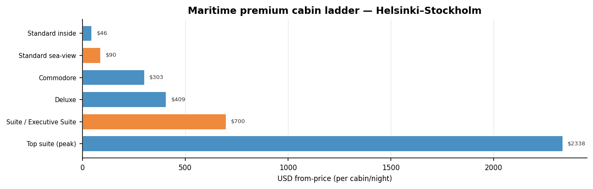
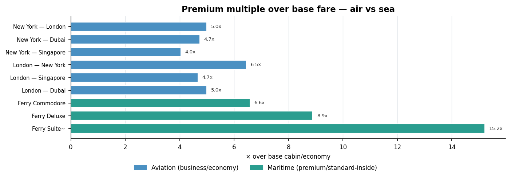

This report prices the "business/premium cabin" tier across the two long-haul transport modes named in the brief: aviation (governed internationally by ICAO) and maritime passenger shipping (governed by IMO and its SOLAS safety convention). It answers a simple question — what does the front of the cabin cost, and how much more is it than the back?
Aviation. Long-haul business class returns cluster around $3,500–$4,650 published on the key routes (NYC–London/Dubai/Singapore), with the US long-haul average near $5,300. Specialist "consolidator" fares undercut published prices by roughly 40–45% ($1,900–$2,565 on the same routes). Business published sits at roughly 5× economy; via consolidator, ~3×.
Maritime. On a representative Baltic route (Helsinki–Stockholm, Tallink Silja / Viking Line) the premium cabin ladder runs from a Commodore at $303 and Deluxe at $409 up to peak suites near $2,338, against a standard inside berth from ~$46 and a route cabin average of ~$194. The premium multiple over the cheapest berth is far higher than aviation's, because the base "cabin" is a shared no-window berth.
Why it matters. Premium is where the money is: front cabins are ~6% of airline seat capacity but ~30% of passenger revenue, and Delta's premium ticket revenue crossed above 50% of the total in Q4 2025. Every figure below is tagged measured or modelled.
Fares are volatile: airline and ferry prices move by date, season, demand and booking channel. This report uses representative from-prices and reported ranges, not a live quote. Economy fares used to derive the business multiple are approximate and flagged modelled where not directly sourced. USD throughout; fares are return/round-trip long-haul; ferry cabins are from-price per cabin/night.
| Body / convention | Scope | Relevance to pricing |
|---|---|---|
| ICAO | UN agency for civil aviation standards | defines the aviation system; airlines set the business/economy fare ladder within it |
| IMO | UN agency for maritime shipping | defines the maritime system; ferry/cruise operators set cabin-class pricing within it |
| SOLAS | IMO Safety of Life at Sea convention | governs safety, capacity and life-saving — it constrains how many cabins/berths a ship may sell, not their price |
| "All Cabs" | all cabin classes, both modes | the premium (business) tier vs the base tier, priced side by side |
So "business class pricing for IMO/SOLAS/ICAO All Cabs" is read here as: the price of the premium cabin tier across aviation and maritime, with SOLAS noted as the safety/capacity frame that bounds supply.
| Route | Carriers | Econ $ | Biz publ. $ | Biz consol. $ | × publ. | × consol. | Basis |
|---|---|---|---|---|---|---|---|
| New York — London | BA / Virgin / AA | 700 | 3,500 | 1,900 | 5.0× | 2.7× | meas. |
| New York — Dubai | Emirates / Qatar | 950 | 4,500 | 2,485 | 4.7× | 2.6× | meas. |
| New York — Singapore | Singapore Airlines | 1,150 | 4,650 | 2,565 | 4.0× | 2.2× | meas. |
| London — New York | BA / Virgin | 620 | 4,000 | 2,100 | 6.5× | 3.4× | model. |
| London — Singapore | SIA / BA | 900 | 4,200 | 2,400 | 4.7× | 2.7× | model. |
| London — Dubai | Emirates | 520 | 2,600 | 1,500 | 5.0× | 2.9× | model. |
| US long-haul (average) | all carriers | 1,000 | 5,300 | 3,000 | 5.3× | 3.0× | meas. |

Premium cabins are a small share of seats but a large share of money, and the mix is shifting forward. This is the strategic backdrop to business-class pricing power.
| Metric | Value | Unit | Period | Basis |
|---|---|---|---|---|
| Premium share of seat capacity | 6 | % | 2025 | meas. |
| Premium share of passenger revenue | 30 | % | 2025 | meas. |
| Delta premium share of ticket revenue | 50 | % (>) | Q4 2025 | meas. |
| Premium economy vs economy fare | 2 | × (~) | 2025 | meas. |
| Prem-econ revenue per sq ft vs economy | 33 | % more | 2025 | meas. |
| Business published vs economy (this data) | 5 | × (~) | 2026 | model. |

| Cabin class | Operator | Occ. | From $ | × inside | Basis | Note |
|---|---|---|---|---|---|---|
| Standard inside | Tallink Silja / Viking | 4 | 46 | — | meas. | cheapest berth, no window |
| Standard sea-view | Tallink Silja / Viking | 4 | 90 | 2.0× | model. | outside cabin midpoint |
| Commodore | Tallink Silja | 2 | 303 | 6.6× | meas. | double bed, breakfast, aqua zone |
| Deluxe | Tallink Silja | 3 | 409 | 8.9× | meas. | upper-deck, breakfast, aqua zone |
| Suite / Executive Suite | Tallink Silja | 2 | 700 | 15.2× | model. | premium suite midpoint |
| Top suite (peak) | Tallink Silja | 2 | 2,338 | 50.8× | meas. | observed high-end cabin price |
| Cabin average (all classes) | route mean | — | 194 | 4.2× | meas. | reported route average |

How much more the premium tier costs than the base, side by side. Aviation business runs ~3–5× economy; maritime premium cabins run much higher over the cheapest berth — but that base is a shared, windowless berth, so the two ratios are not like-for-like.

Premium demand is structurally rising. Airbus projects premium travel driving growth through 2045; US carriers are re-configuring cabins because ~6% of premium capacity drives ~30% of revenue. Delta crossed the point in 2025 where premium ticket revenue exceeded main-cabin revenue.
In maritime, the Baltic overnight ferries are effectively floating premium-leisure products: the Commodore/Deluxe/Suite ladder is the "business class" of the sea, and price dispersion within one sailing (from ~$46 to ~$2,338) is wider than a single long-haul flight. SOLAS caps how much premium inventory a hull can carry, which supports premium pricing when demand peaks (summer, holidays).
| Column | Meaning |
|---|---|
| route/carriers | O&D pair; example carriers |
| econ_return_usd | approx economy return (anchor, often modelled) |
| biz_published_usd | reported published business return |
| biz_consolidator_usd | specialist/consolidator business return |
| mult_* | business ÷ economy |
| basis | measured | modelled |
| Column | Meaning |
|---|---|
| cabin_class/operator | premium ladder + operator |
| occ | max occupancy |
| from_usd | from-price per cabin/night |
| mult_over_inside | from_usd ÷ cheapest inside berth |
| basis | measured | modelled |
| Column | Meaning |
|---|---|
| metric/value/unit | premium-share indicator |
| period/basis/source | when; measured|modelled; provenance |
| File | What it is |
|---|---|
| air_fares.csv | aviation business/economy fares + multiples |
| sea_cabins.csv | maritime premium cabin ladder |
| air_economics.csv | premium-share economics |
| build_cabs.py | this generator — scales with the data |